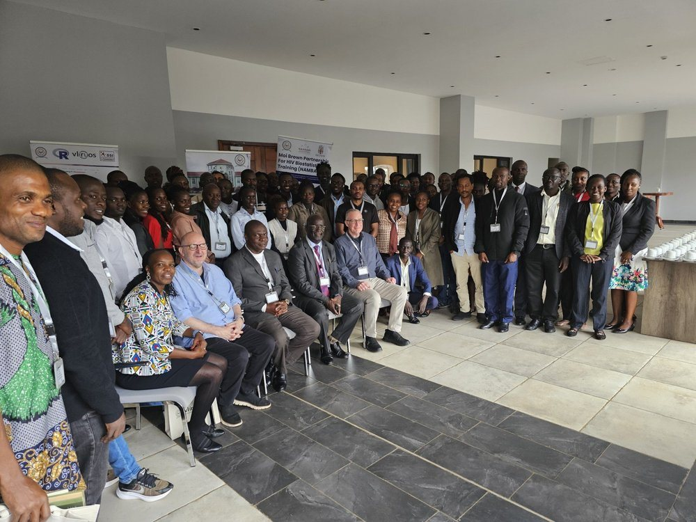
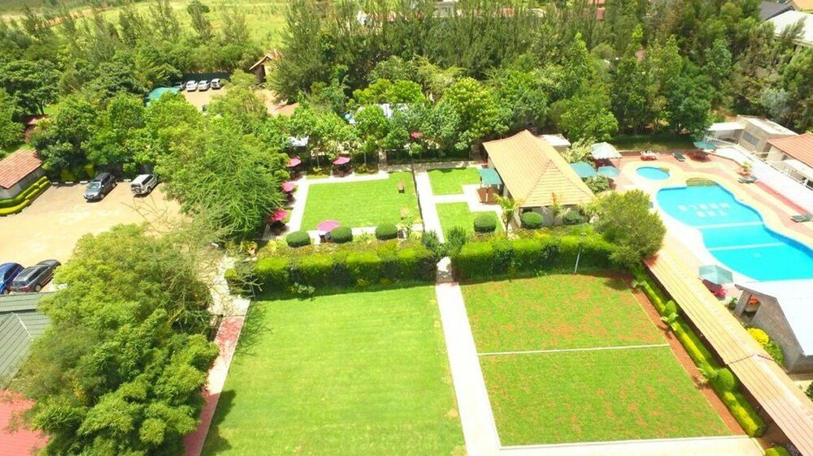
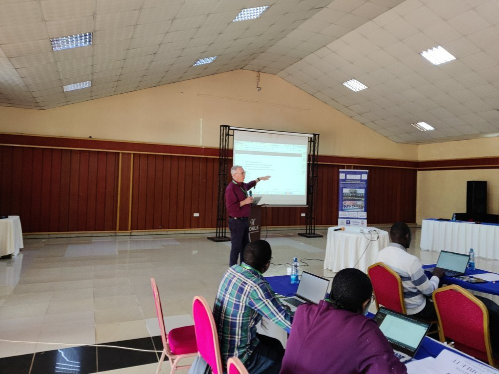

2025 workshop
July 14th-17th, 2025
Survival Analysis and Machine Learning in Health Research
Archive of the program website
The program held a workshop each year for statisticians, data analysts, informatics professionals, faculty and graduate students from Kenya and across Africa. The workshops were free and by application, and were run with NAMBARI, the Moi-Brown Partnership for HIV Biostatistics Training, from 2023 on.

July 14th-17th, 2025
Survival Analysis and Machine Learning in Health Research

October 7th-10th, 2024
Machine Learning for Real-World Data

July 3rd-7th, 2023
Machine Learning & Predictive Inference
May 16th-20th, 2022
How do I integrate social determinants into my work?